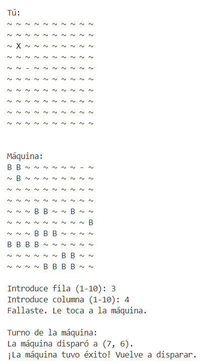
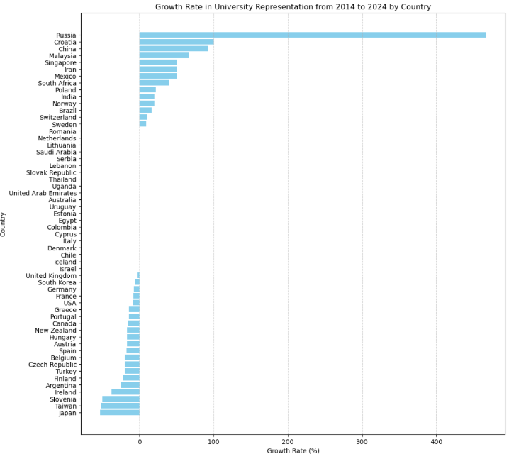
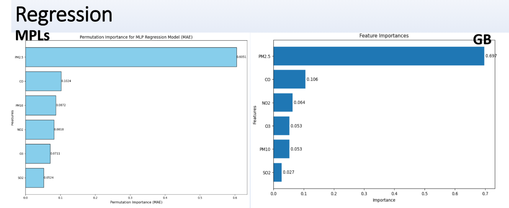
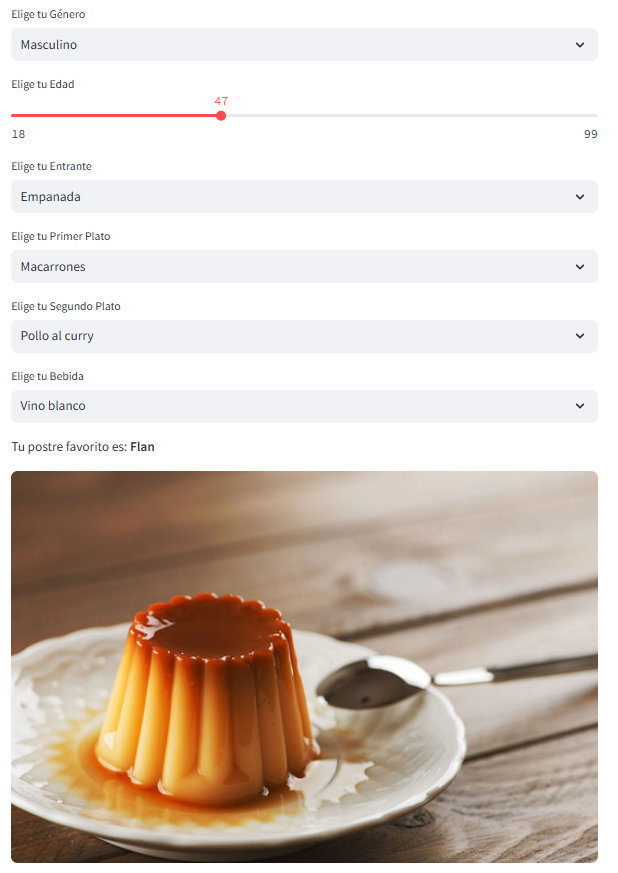

Data Science and Related Projects
Sink the Fleet (Python Game Project)
A python-based implementation of the classic Battleship game (Hundir la flota in Spanish).
EDA of University Rankings Analysis
Exploratory data analysis of worldwide university rankings over multiple years.
Machine Learning for Air Pollution in Iran
Developed predictive models for air pollution trends in Iran using machine learning.
Prediction of Dessert
Applied machine learning techniques to predict dessert based on input features (Postre in Spanish).